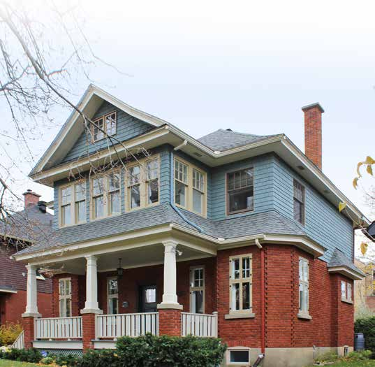
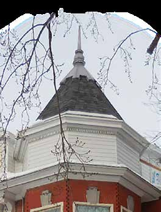

Queen Anne style house La maison de style Queen Anne

© Ville de Saint-Lambert / Patri-Arch (G. Mongrain, M. Dubois), Répertoire des courants architecturaux, fiche 3

© Ville de Saint-Lambert / Patri-Arch (G. Mongrain, M. Dubois), Répertoire des courants architecturaux, fiche 3
The town's signature Victorian: turrets, gables, oriels, a columned gallery, patterned shingles, everything asymmetrical and everything ornamented. Rarely textbook-pure in Saint-Lambert, but its vocabulary is everywhere on the streets laid out after 1889.
One of the late-Victorian eclectic currents (with neo-Gothic, neo-Romanesque, neo-Tudor, neo-Renaissance), named after Queen Anne Stuart's reign (1665–1714) and characterised by "effets ornementaux d'inspiration pittoresque et classique". Its Saint-Lambert examples (Maison Desaulniers 1909, Maison O'Neill 1913) belong to the Anglo-Protestant streetcar-suburb build-out.
| Tenure / plan | single-family |
|---|---|
| Storeys | 2.5 |
| Roof form | gabled-or-hipped |
| Roof pitch | – |
| Window proportion | vertical |
| Principal cladding | clay-brick, wood-clapboard, wood-shingle |
| Roofing | see materials |
| Garage | none |
| Lot width | – |
| Front setback | – |
| Side setback | – |
| Front yard green | – |
What Répertoire des courants architecturaux says about this type
- A strong presence in Saint-Lambert; the influence begins in the 1890s and persists to the early 1930s. Few perfect examples, many houses, detached or semi-detached, borrowing its elements.
- Rectangular or irregular plan of two and a half storeys, moderately raised; two- or four-slope roof of medium pitch; detached or semi-detached.
- Asymmetrical façade articulated by numerous projections: towers, turrets, gables, oriels, bays, galleries, verandas, porches; wood gallery and porch under an awning.
- Corps de bâtiment rectangulaire ou de plan irrégulier de deux étages et demi, moyennement exhaussé du sol, avec toit à deux ou à quatre versants à pente moyenne. La maison peut être isolée ou jumelée.
- La façade présente une composition asymétrique et est articulée par de nombreuses saillies (tours, tourelles, pignons, oriels, baies en saillie, galeries, vérandas, porches). La galerie et le porche, protégés par un auvent, sont construits en bois.
- Elaborate ornament drawing on the classical and picturesque repertoires: classical columns or piers, pediments and worked railings on the gallery; gables and turrets on the roof; cornices underlining the eaves; wood shingle cladding sometimes in decorative patterns.
- Les ornements sont élaborés et puisent dans les répertoires classique et pittoresque. Des boiseries décoratives (colonnes ou piliers classiques, frontons et garde-corps ouvragés) agrémentent la galerie, alors que des pignons et des tourelles ornent la toiture. Des corniches soulignent les débords de toit. Les revêtements en bardeau de bois présentent parfois des motifs décoratifs.
- Traditional wood doors with glazing.
- Wood casements, sometimes with transom, or guillotine windows.
- Dormers of various models.
- Portes en bois traditionnelles avec vitrage.
- Fenêtres à battants en bois, parfois avec imposte, ou fenêtres à guillotine selon le modèle utilisé à l'origine.
- Lucarnes de différents modèles.
- Brick, or wood (clapboard or shingle).
- Roof: traditional sheet metal or slate; industrial metal acceptable only if screws are hidden and it recalls traditional metal.
- Pour les murs extérieurs en brique, aucun matériau d'imitation n'est acceptable. … Pour les murs en bois (planche à clins ou bardeau), favoriser le remplacement par un matériau identique. … Pour le toit, la tôle traditionnelle (à baguettes, pincée ou à la canadienne) et l'ardoise sont à privilégier.
- No imitation brick; do not paint masonry; identical replacement for wood cladding; industrial claddings proscribed; asphalt shingle and synthetics proscribed on the roof.
- Railings in painted wood or wrought iron of traditional make; oriels, gables and bays maintained with care.
- Steel/PVC doors unsuitable; avoid sliding, crank, undivided, aluminium or PVC windows.
- Do not raise foundations or change pitches; side/rear reduced-volume additions only.
Same word elsewhere
- Central-gable house (maison à pignon central) (Gatineau)
- Complex gabled-roof house (maison à toit complexe à pignon) (Gatineau)
- Mansard-roofed house with gable wall on the façade (maison à toit mansardé avec mur pignon en façade) (Gatineau)
- One-and-a-half-storey wooden matchstick house (maison allumette en bois d'un étage et demi) (Gatineau)
- Wood matchstick house of two to two and a half storeys (maison allumette en bois de deux à deux étages et demi) (Gatineau)
- Brick matchbox house, two to two and a half storeys (maison allumette en brique de deux à deux étages et demi) (Gatineau)
- Cubic house (maison cubique) (Gatineau)
- CIP executive's house (maison de cadre de la CIP) (Gatineau)
- Flat-roofed wood house (maison en bois à toit plat) (Gatineau)
- Flat-roofed brick house (maison en brique à toit plat) (Gatineau)
- L-plan house with a two-slope (gable) roof (maison avec plan en L à toit à deux versants) (Gatineau)
- English-revival stone house (Hampstead)
- Postwar detached house (Hampstead)
- Franco-Québécois transitional house (Lévis)
- Québécois traditional house (Lévis)
- Neoclassical house (Lévis)
- Second Empire house (Lévis)
- Victorian house (Lévis)
- American vernacular house (Lévis)
- Beaux-Arts house (Lévis)
- Boomtown house (Lévis)
- Flat-roofed house (Lévis)
- Garden City House (Town of Mount Royal)
- Faubourg House (Town of Mount Royal)
- Canadian House (Town of Mount Royal)
- New England House (Town of Mount Royal)
- Georgian House (Town of Mount Royal)
- English Manor House (Town of Mount Royal)
- Bungalow (Town of Mount Royal)
- Cottage (Town of Mount Royal)
- Split-Level (Town of Mount Royal)
- Prairie House (Town of Mount Royal)
- Semi-detached single-family house (Outremont (borough of Montréal))
- Detached single-family house (Outremont (borough of Montréal))
- Modern house on the flank (Outremont (borough of Montréal))
- Faubourg house (Le Plateau-Mont-Royal (borough of Montréal))
- Detached urban house (Le Plateau-Mont-Royal (borough of Montréal))
- Row urban house (Le Plateau-Mont-Royal (borough of Montréal))
- Traditional French and Québécois house (Saint-Lambert)
- Mansard-roofed house of Second Empire influence (Saint-Lambert)
- Boomtown house with false mansard (Saint-Lambert)
- Boomtown house with crown (parapet or cornice) (Saint-Lambert)
- Cubic (Four Square) house (Saint-Lambert)
- House of Arts and Crafts influence (Saint-Lambert)
- The modern house (including the bungalow) (Saint-Lambert)
- Lower-town company house (Ross and Macdonald, 1918–1923) (Témiscaming)
- Upper-district company house (Somerville, 1925–1950) (Témiscaming)
- French-regime house in stone (colonial français) (Trois-Rivières)
- Well-to-do bourgeois house in stone and brick (maison cossue) (Trois-Rivières)
- Picturesque villa and country house (Westmount)
- Greystone row house (Westmount)
- Mansard-roofed house of Second Empire influence (Westmount)
- Queen Anne house (Westmount)
- Richardsonian Romanesque house (Westmount)
- Semi-detached brick house (Westmount)
- Eclectic prestige house of the summit (Westmount)
- Tudor Revival house (Westmount)
- Arts and Crafts semi-detached house (Westmount)
- Interwar apartment house (Westmount)
Same form elsewhere
- Victorian house (Lévis)
- Queen Anne house (Westmount)
Same period elsewhere
- Family A company houses (models A1–A8) (Arvida (borough of Jonquière, Saguenay))
- Family B company houses (models B1–B4) (Arvida (borough of Jonquière, Saguenay))
- Family C company houses (models C1–C6) (Arvida (borough of Jonquière, Saguenay))
- Family D company houses (models D1–D5) (Arvida (borough of Jonquière, Saguenay))
- Families E, G, H, J, K, L, N, Y and Z (Arvida (borough of Jonquière, Saguenay))
- Mixed-use building with a flat roof (édifice mixte à toit plat) (Gatineau)
- Side-gable duplex (duplex à mur pignon latéral) (Gatineau)
- Central-gable house (maison à pignon central) (Gatineau)
- Complex gabled-roof house (maison à toit complexe à pignon) (Gatineau)
- Mansard-roofed house with gable wall on the façade (maison à toit mansardé avec mur pignon en façade) (Gatineau)
- One-and-a-half-storey wooden matchstick house (maison allumette en bois d'un étage et demi) (Gatineau)
- Wood matchstick house of two to two and a half storeys (maison allumette en bois de deux à deux étages et demi) (Gatineau)
- Brick matchbox house, two to two and a half storeys (maison allumette en brique de deux à deux étages et demi) (Gatineau)
- Cubic house (maison cubique) (Gatineau)
- CIP executive's house (maison de cadre de la CIP) (Gatineau)
- Flat-roofed wood house (maison en bois à toit plat) (Gatineau)
- Flat-roofed brick house (maison en brique à toit plat) (Gatineau)
- L-plan house with a two-slope (gable) roof (maison avec plan en L à toit à deux versants) (Gatineau)
- English-revival stone house (Hampstead)
- Second Empire house (Lévis)
- Victorian house (Lévis)
- American vernacular house (Lévis)
- Beaux-Arts house (Lévis)
- Boomtown house (Lévis)
- Cubic house (maison cubique) (Lévis)
- Flat-roofed house (Lévis)
- Arts & Crafts house (Arts & métiers) (Lévis)
- Wartime housing dwelling (Lévis)
- Modernist building (Lévis)
- Garden City House (Town of Mount Royal)
- Faubourg House (Town of Mount Royal)
- Faubourg Apartment Block (Town of Mount Royal)
- Canadian House (Town of Mount Royal)
- New England House (Town of Mount Royal)
- New England Apartment Block (Town of Mount Royal)
- Georgian House (Town of Mount Royal)
- English Manor House (Town of Mount Royal)
- Semi-detached single-family house (Outremont (borough of Montréal))
- Semi-detached duplex (Outremont (borough of Montréal))
- Detached single-family house (Outremont (borough of Montréal))
- Opulent detached residence (Outremont (borough of Montréal))
- Apartment building (conciergerie) (Outremont (borough of Montréal))
- Modern house on the flank (Outremont (borough of Montréal))
- Faubourg house (Le Plateau-Mont-Royal (borough of Montréal))
- Detached urban house (Le Plateau-Mont-Royal (borough of Montréal))
- Duplex without front setback (Le Plateau-Mont-Royal (borough of Montréal))
- Duplex with front setback (Le Plateau-Mont-Royal (borough of Montréal))
- Duplex with exterior stair (Le Plateau-Mont-Royal (borough of Montréal))
- Triplex with interior stair (Le Plateau-Mont-Royal (borough of Montréal))
- Triplex with exterior stair (Le Plateau-Mont-Royal (borough of Montréal))
- Multiplex (Le Plateau-Mont-Royal (borough of Montréal))
- Row urban house (Le Plateau-Mont-Royal (borough of Montréal))
- Apartment block without courtyard (Le Plateau-Mont-Royal (borough of Montréal))
- Apartment block with courtyard (Le Plateau-Mont-Royal (borough of Montréal))
- Small apartment building (Le Plateau-Mont-Royal (borough of Montréal))
- Lower-town company house (Ross and Macdonald, 1918–1923) (Témiscaming)
- Upper-district company house (Somerville, 1925–1950) (Témiscaming)
- Well-to-do bourgeois house in stone and brick (maison cossue) (Trois-Rivières)
- The 1908 reconstruction block — brick, flat-roofed, built all at once (Trois-Rivières)
- Picturesque villa and country house (Westmount)
- Greystone row house (Westmount)
- Greystone triplex with exterior stair (Westmount)
- Mansard-roofed house of Second Empire influence (Westmount)
- Queen Anne house (Westmount)
- Richardsonian Romanesque house (Westmount)
- Semi-detached brick house (Westmount)
- Eclectic prestige house of the summit (Westmount)
- Tudor Revival house (Westmount)
- Arts and Crafts semi-detached house (Westmount)
- Interwar apartment house (Westmount)
Same style elsewhere
- Complex gabled-roof house (maison à toit complexe à pignon) (Gatineau)
- Victorian house (Lévis)
- Row urban house (Le Plateau-Mont-Royal (borough of Montréal))
- Queen Anne house (Westmount)